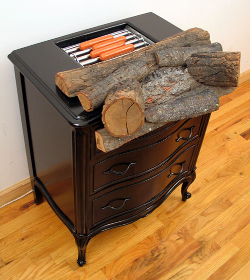
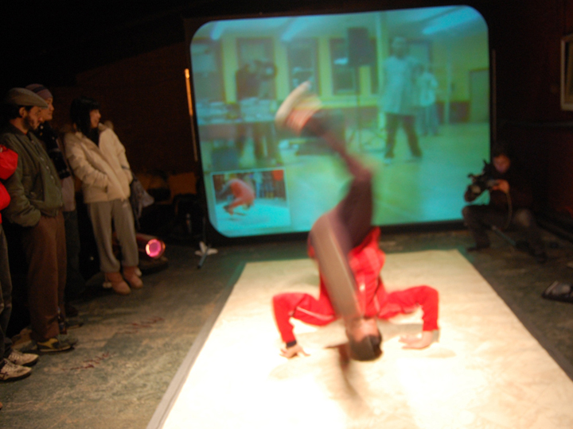
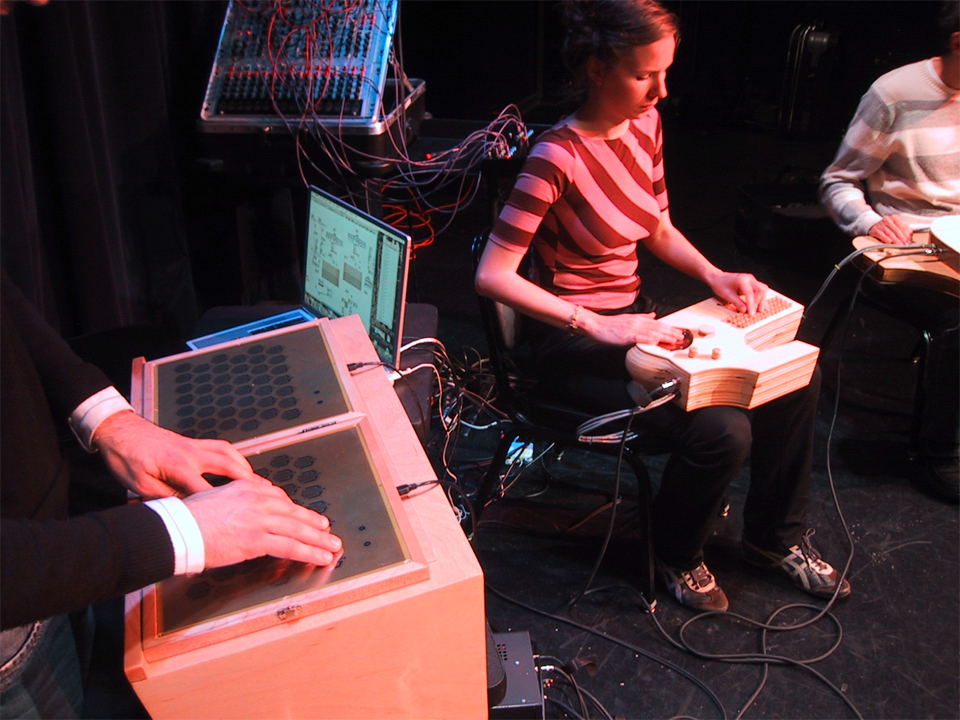

people doing strange things with electricity
The 1015th dorkbot-nyc meeting took place at 7pm on Wednesday, January 2nd, 2008 at Location One in SoHo.
It featured the electroweak and symmetry breaking:

Paul Davies: The Trouble of Interactivity
As a sculptor I have been attracted to the deep engagements that interactivity offers. My practice is not one of inward contemplation and self reflection but rather an active examination of current social and political events and currents. Interactivity offers the artist the opportunity to create a rich dialog with the public. Interactivity also poses great challenges to the artist. The challenges of fabrication, cost, and robustness are ever present. How can an artist make an interactive sculpture that 'lasts' more than 10 minutes into opening night? In the presentation I will show how interactivity has evolved in my work and how my quest for robust interactivity has shaped my choices. Afterwards there will be a discussion of success and failure stories. Paul Davies is a sculptor whose work often includes interactive elements. He has shown internationally at numerous galleries and museums over the past 15 years.
http://www.xraylab.org
Jessica Thompson: Wearable Sound Projects
Jessica Thompson's studio practice involves the creation of wearable sound projects that explore social interactions within public space. Using elements of game-playing and performance, her work attempts to create collaborative situations with the audience where the integrity of the artwork is entirely determined by willing participants. She is best known for her project called SOUNDBIKE, a mobile sound piece that uses motion-based mini-generators mounted to an ordinary bicycle to broadcast the sound of laughter as the bike is pedaled. At dorkbot Thompson will discuss two recent projects, "Give It Up" (a networked breakdance battle) and "Public Sound Project: Bike Hack + Soundride" (bicycle-mounted noisemakers).
http://www.pmgallery.ca/Catalog_View_Summary.php?ID=22
Jeff Snyder: New Electronic Music Instruments
Jeff Snyder has been developing some electronic instruments for the past year or so, and he'll be showing them off. Plus, he may even demonstrate them and warm your heart with their angelic sounds.
http://www.scattershot.org
Joel made a flyer. Thanks, Joel!
Some images from the meeting:
douglas's images
roberto tobar's images